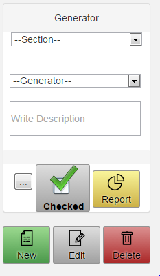
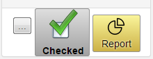
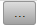
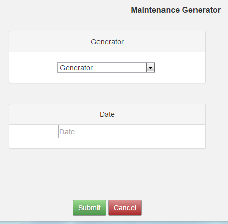
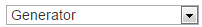
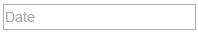
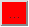
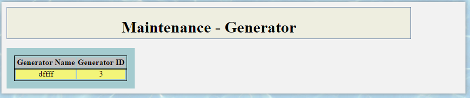

Πατώντας το κουμπί  θα εμφανίζεται η φόρμα Maintenance Generator

Στην οποία ο χρήστης θα μπορεί επιλέγοντας γεννήτρια  και μετά ημερομηνία 
στην οποία θα αντιστιχεί η συντήρηση που έχει γίνει η συγκεκριμένη γεννήτρια.
Το σύστημα θα μπορεί να ενημερώσει τον χρήστη κοκκινήζοντας το κουμπί  μετά απο 365 μέρες ότι το σιγκεκριμένη γεννήτρια
θα χριαστεί νέα συντήρηση.
Πατώντας το κουμπί απλά θα εμφανίζονται η γεννήτρια/γεννήτριες που θα χριάζονται νέα σιντίρηση.

Το κουμπί θα παραμείνει κόκκινο για μία ολόκληρη μέρα.
Created with the Personal Edition of HelpNDoc: Generate Kindle eBooks with ease